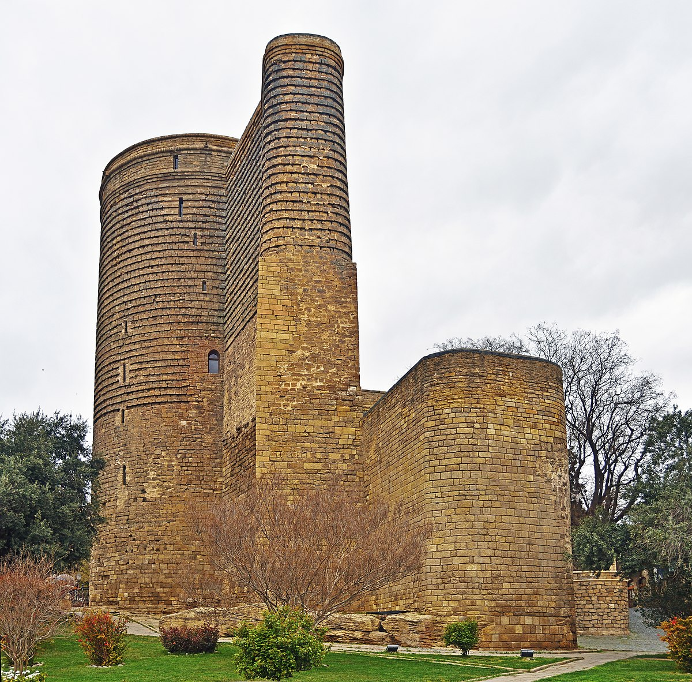

Баку́ (азерб. Bakı, МФА (азерб.): [bɑˈcɯ]) — столица Азербайджанской Республики, крупнейший
промышленный, экономический и научно-технический центр Закавказья, а также самый крупный порт на Каспийском море
и самый большой город на Кавказе. Площадь территории, которая административно управляется Баку, составляет 2140
км²; население данной территории —
2 262,6 тыс. жителей (на 1 января 2018 года), на ней располагаются собственно город Баку населением 1 259,3 тыс.
жителей и 59 посёлков городского типа суммарным населением 1 003,3 тыс. жителей. Баку расположен на южном берегу
Апшеронского полуострова. Город по своей древности, величине территории и численности населения является одним
из старинных и крупнейших городов Востока. Население всего Апшеронского полуострова (Бакинской агломерации)
составляет 2 813,8 тыс. жителей. В 2010 году Баку был удостоен Программой ООН по окружающей среде (UNEP) звания
одного из главных городов по проведению Всемирного дня окружающей среды, наряду с Генуей (Италия) и Женевой
(Швейцария).

Девичья башня (азерб. Qız Qalası — Гыз галасы) — древняя крепостная постройка у прибрежной части
«Старого города» Ичери-шехер. Является одним из важнейших компонентов приморского «фасада» Баку. Возвышается в
прибрежной части феодального города — Крепости, или Ичери-шехер. Башня стоит на скале, частично облицованной
чисто тёсаным камнем и защищённой крепостной стеной с системой крупных полукруглых выступов, поднимающихся от
подножия почти до самой вершины.